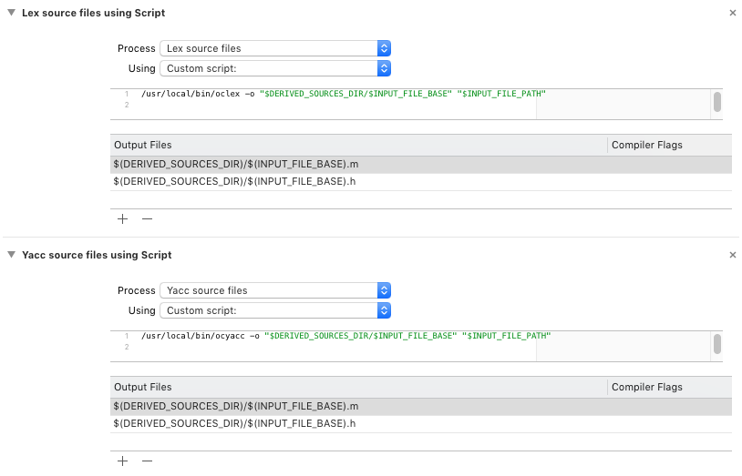

Using OCTools
Abstract
This document gives an overview of the OCLex/OCYacc command line tools, including how to install them into XCode, and how to build lexers and parsers using these tools. OCLex and OCYacc both generate Objective-C and C++ runtime files, which allow them to be used in MacOS and iOS applications relatively easily.
The OCTools command-line programs OCYacc and OCLex are tools which can be used as rough substitutes for yacc and lex in generating file tokenizers and file parsers. The goal is to provide roughly source-compatible substitutes for yacc and lex that can generate re-entrant parsers in Objective-C code or C++ code.
The suite of tools generate a re-entrant Objective-C or C++ class which can be used to tokenize and parse an input file. The system generates LR1 grammars, which means they are limited to the family of grammars which require only one look-ahead. (LR1 grammars operate in linear time and can be quite fast.)
OCTools were built to be incorporated into Xcode, and instructions as to how to do that is later in this paper.
It's worth noting at this point that the original yacc and lex tools incorporate C code in their files, to allow the user to create C parsers and include code to execute as parts of a file are successfully parsed. This inline code (generated when part of a language is reduced) may not be compatible with Objective-C or with C++. Thus, while you cannot use the exact same yacc or lex file to generate an Objective-C or C++ parser as you would use with yacc or lex, the changes mostly revolve around the requirements for building an Objective-C or C++ file.
This document provides several examples for building complex parsers using OCLex and OCYacc, including how to write .y and .l files that include code snippets that work with Objective-C and C++.
Examples include example code for building tokenizers, for building parsers that take a custom tokenizer not built using OCLex, and for building complete parsers that take as its input a stream of characters and produce a complete parser/tokenizer stack.
This document assumes that you are a developer who has access to a Macintosh system with Xcode installed. (This is required in order to build the OCTools packages from the source kit, and for installing the tools into Xcode.) Of course you can also compile the C++ source kit using the included makefile.
The OCTools stack is licensed under the open-source BSD license:
Copyright © 2017-2019 William Woody and Glenview Software
Redistribution and use in source and binary forms, with or without modification, are permitted provided that the following conditions are met:
THIS SOFTWARE IS PROVIDED BY THE COPYRIGHT HOLDERS AND CONTRIBUTORS "AS IS" AND ANY EXPRESS OR IMPLIED WARRANTIES, INCLUDING, BUT NOT LIMITED TO, THE IMPLIED WARRANTIES OF MERCHANTABILITY AND FITNESS FOR A PARTICULAR PURPOSE ARE DISCLAIMED. IN NO EVENT SHALL THE COPYRIGHT HOLDER OR CONTRIBUTORS BE LIABLE FOR ANY DIRECT, INDIRECT, INCIDENTAL, SPECIAL, EXEMPLARY, OR CONSEQUENTIAL DAMAGES (INCLUDING, BUT NOT LIMITED TO, PROCUREMENT OF SUBSTITUTE GOODS OR SERVICES; LOSS OF USE, DATA, OR PROFITS; OR BUSINESS INTERRUPTION) HOWEVER CAUSED AND ON ANY THEORY OF LIABILITY, WHETHER IN CONTRACT, STRICT LIABILITY, OR TORT (INCLUDING NEGLIGENCE OR OTHERWISE) ARISING IN ANY WAY OUT OF THE USE OF THIS SOFTWARE, EVEN IF ADVISED OF THE POSSIBILITY OF SUCH DAMAGE.
You can, of course, use the OCTools software suite as a stand-alone command-line tool. OCTools can also be installed into Xcode.
The latest version of OCTools can be downloaded as an installable package from GitHub at the link:
Download the file and double-click the package to install.
You can also clone the source kit on GitHub. Open the OCTools.xcworkspace file in Xcode, select the OCTools project and build. This will generate the package file above, which can then be used to install the built tools.
For each project's target you need to add a number of custom build rules in order to compile .y and .l files. Select the target in your project file, select "Build Rules", then add two custom rules by using the "+" icon next to the "All"/"Custom" list.
For the first rule select "Lex source files", the second "Yacc source files." You can then specify the custom script for each: for Lex enter:
for Yacc, enter:
If you're building a C++ file you may wish to add the appropriate flags.
For both you also need to add the following output files:
(or .cpp if a C++ file).
The result should look like the following:
$(DERIVED_SOURCES_DIR)/ prefix.
This is a brief overview and quick reference guide to using OCYacc, including the specification for the .y file as well as how to invoke OCYacc from the command line. More detailed examples of using the ocyacc command line tool and building applications with ocyacc can be found in later chapters.
Where:
-o foo outputs foo.m and foo.h for Objective-C files.)MyFile.y, and will generate a class MyFile with two output files MyFile.m and MyFile.h for an Objective-C output file.
The input file for OCYacc is similar to the input file used by yacc or bison, but with some very important differences.
First, because the output file is being generated for use in Objective C or C++, the code snippets you add should be written for Objective C or C++.
Second, some elements of the .y file need to be modified to handle a re-entrant tokenizer, and some of the error processing methods have different names.
Like Yacc, the OCYacc input file has the following format:
The declarations section provide basic declarations used in generating the parser file. The rules are a list of parsing rules, and the last code section contains additional code which will be written into the parser class file.
Production rules in OCYacc are similar to Yacc: they represent a collection of components which reduce down to a single logical statement.
Each rule in the list of production rules have the format:
where "result" is the production symbol this rule describes, and "components" is a list of tokens or other production rule results that describe this rule.
Multiple production rules that produce the same result can be written:
When a rule is matched--for example, when the following rule:
matches against the string of tokens
the rule is "reduced", the string of tokens is replaced with the rule 'add' in the list of tokens.
When a rule is reduced, it can execute an optional chunk of code as part of the reduction. The code is inserted at the end of the list of components in curly braces:
Each matched token or rule may have an associated value attached to it, which can be accessed in the code segment using the pseudovariables $1...$n, representing the first to the last components in the list of components. The rule being reduced can have its value assigned by assigning to the pseudovariable $$.
So, from the example above, we can change our addition rule to read:
Assuming the tokens are properly defined, then when we encounter the string of tokens
after the reduction the list of tokens are replaced with the rule 'add' with the value 3.
The %prec declaration following a list of components gives the relative precedence of a rule and can be used to resolve the if/else problem.
Suppose we write a rule for parsing if/else statements in C:
These rules create a shift/reduce conflict, since if the user were to write the statement:
does the user mean:
or
That is, is the else associated with the first if or the second?
For C, where the else ties with the closest if (that is, the second if, making the first solution the correct one), this conflict can be resolved using the %prec declaration:
This is done by first creating in the list of association statements a non-associated precedence symbol with a lower precedence than the else token:
(See the documentation about precedence below.)
By adding the %prec statement after the rule:
We can make the else statement have higher precedence, which means when we encounter the else statement, it is associated with the closest if statement.
There are a number of declarations that can optionally be added to a OCYacc file.
Defines a comma-separated list of symbols as terminal tokens that are returned by the lexer. The symbols are copied as #define statements in the generated header file, and can be used by the lexer as the integer value to return when these token are found.
The type is optional. If provided it indicates the type of value that is associated with the token.
This defines the type associated with the production rules listed in the list of symbols. The %type declaration is optional, and is only required when a production rule has a value associated with it.
Both the %token and %type declarations can be used to associate a type with a terminal token or with a production rule. The type defines the value of the $$, and $0 through $n pseudovariables used in writing the code associated with a production rule.
How the type parameter is interpreted depends on the target language.
For Objective C, the type parameter is the Objective C class type that defines the value of an object. The Objective C type must be an NSObject or descendant of an NSObject class. For example, if you have a rule whose value is an array of strings you would write:
This implies that with Objective C, there is no %union declaration. As all the types are interpreted as class declarations, this implies during error handling excess memory can be automatically released. It also allows you to use certain built-in classes without additional declarations.
For C++, the type parameter indicates the variable name in the %union declaration.
The %union declaration should declare a union type, which is used as the stack of objects managed during the rule reduction phase. The type parameter in the %type and %token values are the union field names of the fields used to store the results.
For example, with the add rule above:
we can declare
The values of the $$, $1 and $3 pseudovariables turn into references into the union field value.
%union declaration is used in an OCYacc file used to generate Objective C, the declaration and its contents are silently ignored.These tokens set the precedence and associativity of a group of tokens. Tokens declared on the same line have the same precedence, and are treated with left associativity, right associativity, or made non-associative if they show up in the same statement. Later declarations have higher precedence than earlier declarations.
For example, if we set the associativity of basic math operators as:
The last two symbols (multiply and divide) are treated with higher precedence, so the following grammar will evaluate the statement 1 + 2 * 3 + 4 correctly:
The type is optional, and provides a way to specify the type of the symbol; see the discussion about tokens and types above.
Defines the production rule that is the start of the parsing grammar.
Unlike yacc, OCYacc has a number of places where code can be declared. This ties directly in with the fact that the target code generated by OCYacc is a class rather than non-re-entrant procedural code. For a class generated in Objective-C by OCYacc, the header declaration for our generated class looks like:
The generated class, meanwhile, looks like:
For code generated in C++, the layout of the classes are similar. For a C++ header file, the declaration looks like:
And the C++ source code looks like:
The placement of each segment of code implies certain blocks of code have certain defined purposes. That's given below, though note this can be "abused" if you know where the code you're writing will be inserted into the generated file.
The traditional yacc-style %{...%} block of code is used to declare inline structure declarations that are used internally by the generated class. The contents of this code block are not exposed on Objective C, but are on C++ (by the nature of how C++ classes are declared).
The %header code block is used to declare #include or #import declarations and other inline structure declarations which are to be declared in the header of the generated class. This would be used, for example, to include a header file that is required to compile a structure that is used by users of the generated parser class.
The %init code block is inserted into the class constructor, and is used to initialize any internal structures that have been added to the custom class you're building.
The %finish code block is inserted into the destructor or dealloc method associated with the class, and is used to release any resources used by the custom class you're building.
The %global code block is used to insert declarations into the class that are publicly visible to users of this class. This can be used to declare methods that are accessible by users of this class.
The %local code block is used to insert private declarations into the class that are only visible within the class itself. This would be used to declare internal method or fields that are required by your custom class.
The third part of the overall ocyacc file contains a block of optional code at the bottom of the file. This is where you would declare methods that are internal to your custom class which provide additional functionality required by your application. This is where the C++ or Objective-C style methods would be added. The methods are guaranteed to be written in such a way so that they are accessible by any inline code associated with your production rules.
The Objective C version of OCYacc will produce a protocol declaration OCLexInput, which defines all the fields required by the generated parser class to read tokenized data. OCLex generated tokenizers will properly implement this class, and the value associated with each token corresponds to the value field in the protocol.
If you choose not to use OCLex to build the tokenizer, you can instead build your own custom tokenizer that corresponds to the OCLexInput protocol.
In order for the C++ version to work properly, the OCYacc tool generates a unique name for the %union declaration and can generate two possible types of interfaces depending on if you're using OCLex to generate the tokenizer. The type of interface generated is determined by if you use the %lex declaration in the OCYacc file.
The first, generated without the %lex declaration, generates an abstract OCLexInput class in the output header file. This class can then be overridden by your tokenizer class in order to provide the proper interface to provide tokens to your C++ based parser. That OCLexInput class has the following format:
Note that the %union value generated by the OCYacc code has the union name OCLexInputValue.
If, however, you plan to use the OCYacc generated parser with an OCLex generated token, you need to use the %lex declaration:
The first parameter, class-name is required and gives the name of the OCLex-generated class. The second parameter header-name is optional, and can be either a string or a token. If it is a string, it should be the name of the header file the class is declared in. If a token, it is turned into a header name by having the extension .h post-pended.
When the %lex declaration is used, the OCLexInput abstract class is not defined. Instead, the OCYacc code generator will write a forward declaration for the lexer class. The union generated by the %union token will have the name class-nameValue. And the header in the %lex declaration will be included in the generated C++ source file.
Examples of this are shown later in this document.
Internally when an error is encountered during parsing, the parser will call one of two internal methods to report the error. For Objective C, the methods are:
For C++, the methods are:
For both methods, the first parameter code is an error value which translates to a specific error in your parser. Several error values are predefined in the generated header file; for both, the values ERROR_SYNTAX, ERROR_MISSINGTOKEN and ERROR_MISSINGTOKENS are defined. Your own error tokens should begin with the value ERROR_STARTERRORID, and warnings can have the ERRORMASK_WARNING bit set.
The second parameter in the first version of each is an optional set of key/value pairs that your error can return for more information. The second version of each method simply passes an empty set of key/value pairs to the error handler.
### Finish discussion
The Objective C and C++ generation code will both generate a stand-alone parser file. Both classes also generate an optional protocol (or abstract class in C++) which define the lexer that provides a string of tokens (and their value) to the parser.
Assuming you've built a lexer class which conforms to the OCLexInput protocol, in Objective C you would use your parser by writing:
Using a C++ generated class is similar:
Typically the results are stored in the class itself in custom code you provide. That is, in order to get the results (say, in the form of a parse tree), you would declare a %global section which presents the results, and access the results through that declaration.
More information about how to do this is contained in later chapters.
This is a brief overview and quick reference guide to using OCLex, including the specification for the .l file as well as how to invoke OCLex from the command line. More detailed examples of using the oclex command line tool and building applications with oclex can be found in later chapters.
Where:
-o foo outputs foo.m and foo.h for Objective-C files.)This program by default takes an input file of form MyFile.l, and will generate a class MyFile with two output files MyFile.m and MyFile.h for an Objective-C output file.
The input file for OCYacc is similar to the input file used by lex or flex, but with some very important differences.
First, because the output file is being generated for use in Objective C or C++, the code snippets you add should be written for Objective C or C++.
Second, some elements of the .l file need to be modified to handle a re-entrant tokenizer, and some of the error processing methods have different names.
Third, internal variables have different names than the ones used by lex.
Like Lex, the OCLex input file has the following format:
The declarations section provide basic declarations used in generating the parser file. The rules are a list of parsing rules, and the last code section contains additional code which will be written into the parser class file.
Rules and name declarations within OCLex use regular expressions to match a sequence of characters and symbols forming a character token. Patterns are matched using a greedy algorithm, meaning the longest matching subsequence of characters are always matched. Each time a pattern of characters is matched, the corresponding section of code is triggered, which often parses the value of the token and returns a token identifier for that token.
Like OCYacc, OCLex has multiple different declarations that are used to define the parts of the resulting lexer class. OCLex also allows name declarations to simplify the scanner specification.
A name declaration allows the simplification of a scanner. A name declaration has the following format:
The name specifies the name of the declaration, and the pattern identifies a pattern matching a regular expression that matches one or more characters.
For example:
Each named identifier can be used in a rule (below) by writing {name}. So, for example, an integer rule may look like:
More about defining lexical rules below.
Rules (described below) may be optionally triggered by a start flag. You declare start flags by using the %start declaration:
Individual start state flags can be activated or deactivated by using the statement such as BEGIN TOKEN; or END TOKEN; as described in the optional rules section below.
A token may have a value. In Objective C, values must be an object stored in an id
For C++, values are stored in a union, similar to that in OCYacc (above). To declare the union for a stand-alone tokenizer (that is, one not used with an OCYacc generated parser), you can declare it using a %union declaration:
Like OCYacc above, OCLex has a number of places where code can be declared. This ties directly in with the fact that the target code generated by OCLex is a class rather than non-re-entrant procedural code. For a class generated in Objective-C by OCLex, the header declaration for our generated class looks like:
The generated class, meanwhile, looks like:
For code generated in C++, the layout of the classes are similar. For a C++ header file, the declaration looks like:
And the C++ source code looks like:
The placement of each segment of code implies certain blocks of code have certain defined purposes. That's given below, though note this can be "abused" if you know where the code you're writing will be inserted into the generated file.
The traditional lex-style %{...%} block of code is used to declare inline structure declarations that are used internally by the generated class. The contents of this code block are not exposed on Objective C, but are on C++ (by the nature of how C++ classes are declared).
The %header code block is used to declare #include or #import declarations and other inline structure declarations which are to be declared in the header of the generated class. This would be used, for example, to include a header file that is required to compile a structure that is used by users of the generated parser class.
The %init code block is inserted into the class constructor, and is used to initialize any internal structures that have been added to the custom class you're building.
The %finish code block is inserted into the destructor or dealloc method associated with the class, and is used to release any resources used by the custom class you're building.
The %global code block is used to insert declarations into the class that are publicly visible to users of this class. This can be used to declare methods that are accessible by users of this class.
The %local code block is used to insert private declarations into the class that are only visible within the class itself. This would be used to declare internal method or fields that are required by your custom class.
The third part of the overall oclex file contains a block of optional code at the bottom of the file. This is where you would declare methods that are internal to your custom class which provide additional functionality required by your application. This is where the C++ or Objective-C style methods would be added. The methods are guaranteed to be written in such a way so that they are accessible by any inline code associated with your production rules.
The rules section contains one or more rules of the form:
Like lex or flex, the code inside the curly braces following a pattern is executed as soon as the pattern is successfully matched. Generally on matching a pattern you can either return an integer value representing the matched token, or you can execute some internal code.
Patterns are then matched until we reach the end of the file.
Patterns are written using regular expressions. The regular expressions recognized by OCLex are:
| x | The character "x". |
| "x" | The string of characters "x", even if x contains an operator. |
| [xz] | The character x or z. |
| [x-z] | The characters in the range of characters. (In this case, the letters x, y or z.) |
| [^x] | Any character but x. |
| . | Any character but newline. |
| ^ | (If at the start) matches the start of a line. |
| $ | (If at the end) matches the end of a line. |
| x? | Character x is optional. |
| x* | Zero or more instances of x. |
| x+ | One or more instances of x. |
| x|y | Either x or y. |
| (x) | The pattern x. (Can be used in combination with other patterns above to group patterns.) |
| {name} | The translation of name in the declarations section. |
| <token>x | (If <token> is at the start) match pattern x only if OCLex is in start condition token.) |
When the generated scanner is run, it scans the input looking for the longest substring which match the provided patterns. If multiple patterns match, the first rule in the list of rules is used.
Note that because this scans for the longest input pattern, certain rules may not behave as expected. For example, the following rule to eliminate C comments will not behave as expected:
This is because the rule will continue to scan until it finds the very last close comment in the file. That is, the entire example below will be ignored by your rule:
That's because the scanner will find the longest substring which matches the rule--and the longest substring matches all the way from the very first "/" of the first comment all the way down to the last "/" of the "Done" comment.
Unlike Lex or Flex, you must provide rules for matching all possible substrings; there is no implicit rule to ignore illegal characters. If you wish to emulate this behavior, you must provide the following as the last rule in your rule set:
Also note that code executed when a rule is matched must be included in curly braces. Thus, the following, legal in Lex or Flex, is illegal in oclex:
Instead, this must be written:
When the code segment is written to the Objective C file, the curly braces are stripped. So if you need to declare a local variable in your action code segment, you will need to write:
Note that actions may span multiple lines.
A rule may be made optional by adding the &tl;START> prefix, with START as one of the states previously declared in the %start declaration section. If is added, then the rule is only executed if the START state is true.
A rule state may be activated by adding the code BEGIN START;--this is translated to code which sets the state associated with START. If the statement BEGIN 0; is found, all states are cleared. The code END START; is used to clear the specific state associated with START.
OCLex uses a slightly different mechanism for passing values to OCYacc than used by Lex and Yacc. To review, Yacc uses the %union directive to specify a union structure in C to represent the potential values of symbols and tokens. This structure is exposed to Lex via the yylval global, which is a union object declared with the contents of the %union declaration.
Thus, if you wish to pass back an integer value associated with a token (such as returning the integer value of a string of digits), you can declare in Yacc a union like:
And in your Lex production rule, write:
Objective-C does not provide unions, so OCLex and OCYacc uses a different mechanism. Each token in OCYacc may have an associated type; the type represents a class that stores the value. No %union declaration is required.
Thus, in OCYacc, you'd replace the above with:
This indicates our integer value is returned in an NSNumber object. You would then set the value self.value to the value in your Lex production rule:
See the OCYacc documentation for more information.
For C++, the method used to return a value to from an OCLex generated tokenizer is through the %union directive. How you would use this directive depends on how you intend to use the OCLex generated class: either as a stand-alone class or as a plug-in to a OCYacc generated class.
For a stand-alone OCLex generated tokenizer that will not be used with an OCYacc generated parser, you would declare the %union declaration within the .l file. So, for example:
Then within your production rule you can write:
See the examples below for more information.
For an OCLex tokenizer that is used with an OCYacc parser, the %union declaration would be created as part of the OCYacc header file in the %union declaration in the .y file. You would then include the header file generated by the OCYacc compiler as part of your %header declaration:
You then can write the production rules as:
The resulting OCLex generated class in Objective C and C++ both use the protocol (abstract class) OCFileInput to read data from. The OCFileInput protocol has the following specification in an OCLex file:
In C++, it has the declaration:
In both cases, readByte reads the next byte and advances the file reader to the next byte position in the file, returning -1 if the end of file has been reached. And peekByte reads the next byte in the file but does not advance the position in the file. (This is used to peek at the next byte in the file without reading it.)
You need to provide the file input class yourself. Examples of this can be found later in this document.